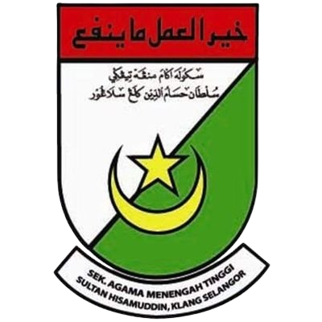
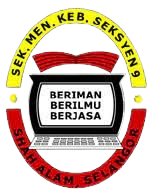

EDUCATION
PRIMARY SCHOOLS
- Sekolah Rendah Islam Hira' (2008)
- This is my first primary school & I have been studying here for only 1 year as the school is quite far from my house.
- During my study period in this school, I have been taught and learned on a lot of Islamic knowledge and subjects which are really helpful for me until now.
- Sekolah Rendah Agama Integrasi Tengku Ampuan Fatimah (2009 - 2013)
- This is my second primary school & I have been studying here for 5 years.
- This school have left me with a lot of memories and sweet moments which I cherish until now.
- This school also has taught me a lot about leadership skills and teamwork.
- I'm also taking my UPSR and PSRA in this school which had granted me with a results of 4A 1B & Mumtaz.
- Some achievements that I have accomplished are:
- Standard 5: Penolong Ketua Kebersihan
- Standard 6: Ketua Kelas
SECONDARY SCHOOLS

- Sekolah Agama Menengah Tinggi Sultan Hisamuddin (2014 - 2015)
- After getting flying colours results, I have been offered to enter into a Sekolah Kluster Kecemerlangan called SAMTSH.
- Besides learning basic subjects like other schools, I have to take additional subjects which are in Arabic language such as:
- Nahu Sorof
- Tauhid Fiqh
- Tilawah Hafazan and etc.
- However, as I did not plan to pursue studying in Arabic or going overseas such as Mesir or Jordan, I have decided to change to a basic school.

- Sekolah Menengah Kebangsaan Seksyen 9 (2016 - 2018)
- Thus, this is my second secondary school & I have been studying here for 3 years.
- I have taken my PT3 and SPM here which have given me the results of:
- PT3: 7A 1B
- SPM: 4A 4B 1C
UNIVERSITY
- UiTM Cawangan Perak, Kampus Tapah (2019 - 2021)
- After finishing SPM, I pursued my study in Diploma in Accounting Information System at UITM Tapah, Perak.
- During my study, I have joined the Pertahanan Awam club society which have given me a lot of experience and knowledge in terms of handling events.
- Some of my leadership expereinces are:
- Biro Persegaran for "Talk with Confidence" event
- Biro Teknikal for "Gotong-royong with Anak Yatim" event
- After 2 1/2 years, I successfully finished my diploma with a CGPA of 3.93 and I managed to get an ANC Award.
- UiTM Cawangan Kelantan, Kampus Kota Bharu (2022 - 2024)
- During the final year of my diploma, I succeeded in getting the Penerapan offer for Bachelor in Accounting at UITM Alor Gajah.
- However, I have declined the offer as at the last as minute I decided to change my course to Bachelor in Finance.
- During my study at UITM Kota Bharu, I also gained a lot of leadership skills and event management experiences.
- Currently, I am assigned to EXCO Korporat & Perhubungan in a society club called Inspirasi and my current CGPA is 3.94.